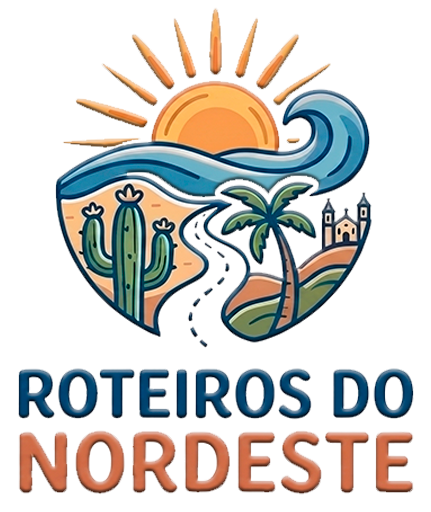
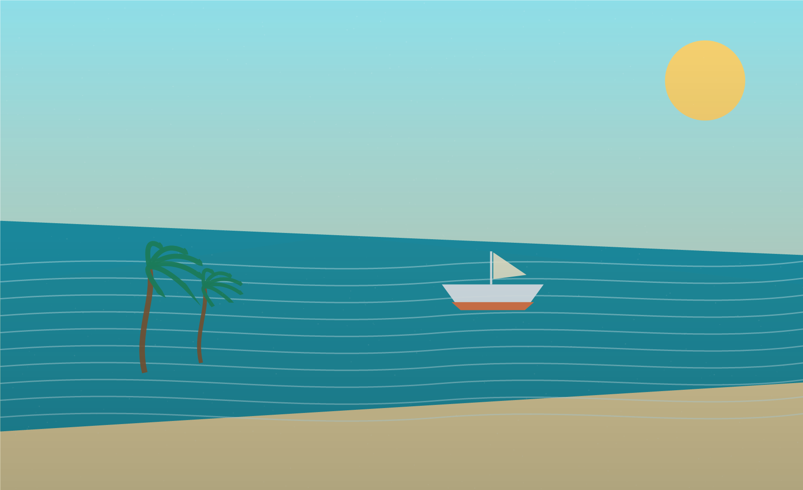
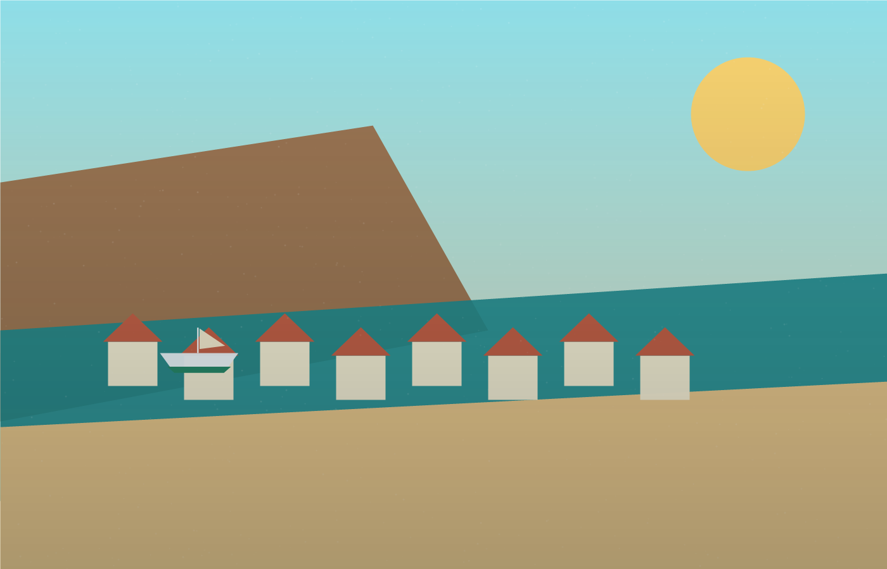
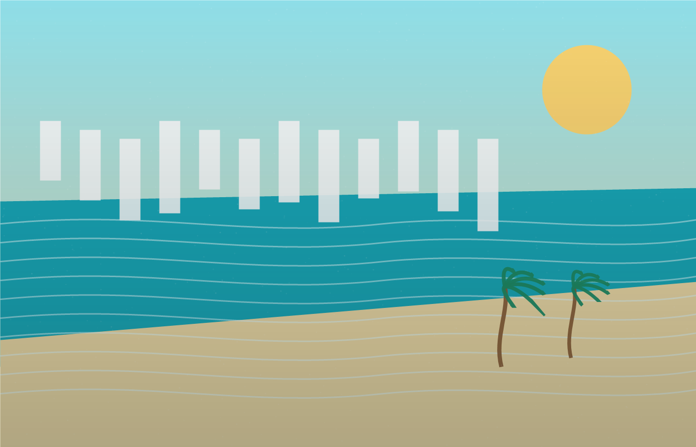
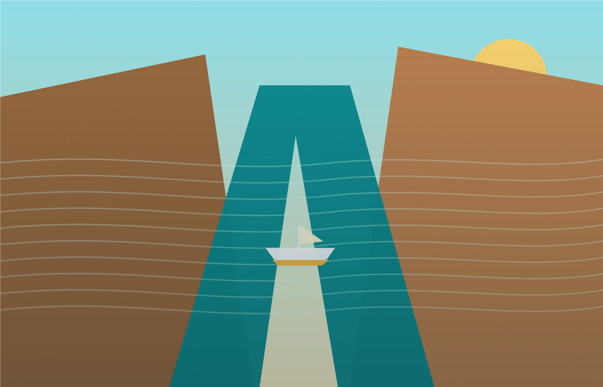
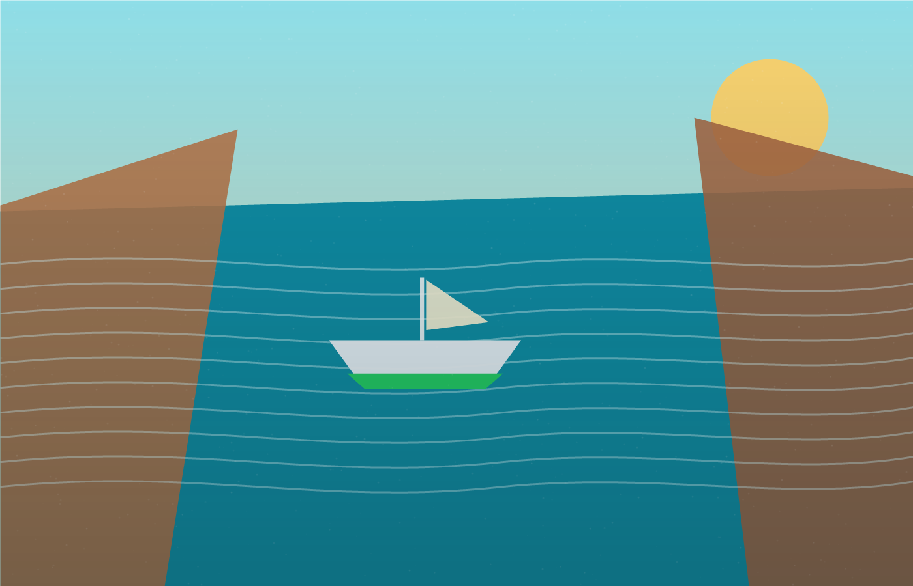
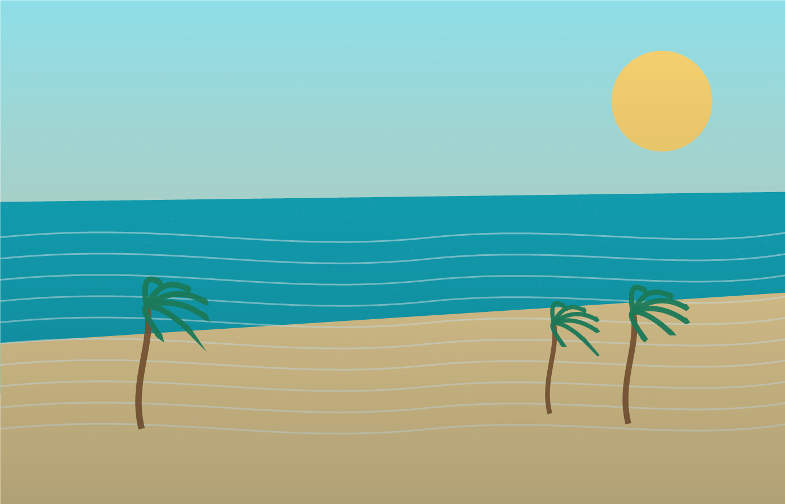

Rio São Francisco
Passeio em Piaçabuçu
Experiência pelo Rio São Francisco, dunas, natureza e paisagens incríveis na região da foz.

Roteiros do Nordeste passeios selecionados WhatsApp
Alagoas, Sergipe e Velho Chico
Pacotes selecionados para praias, rios, cânions, passeios culturais e vivências regionais com suporte do início ao fim.
Você escolhe o destino, nós aproximamos você dos melhores passeios, operadores e experiências da região, com orientação clara para reservar com tranquilidade.
A Roteiros do Nordeste atua revendendo pacotes e passeios selecionados para quem deseja conhecer Alagoas, o Rio São Francisco, praias, cânions, cidades históricas e experiências regionais com mais praticidade.
Nosso atendimento é próximo, rápido e humano. Ajudamos você a escolher o passeio ideal, tirar dúvidas antes da reserva e receber suporte antes e durante a experiência.

Escolha um roteiro pronto ou fale conosco para ajustar datas, transporte e estilo de experiência.
Experiência pelo Rio São Francisco, dunas, natureza e paisagens incríveis na região da foz.

Praias paradisíacas, orla, piscinas naturais e passeios inesquecíveis no Caribe brasileiro.

Um roteiro histórico e natural com paisagens únicas, banho no rio e mirantes impressionantes.

Experiência relaxante pelas águas do Velho Chico, com visual de cânions, paredões e águas verdes.

Pacote montado de acordo com o perfil do cliente, número de dias, grupo e destinos desejados.
Orla charmosa, piscinas naturais, jangadas e mar em tons de azul.
Porta de entrada para dunas, barcos e paisagens da foz do Velho Chico.
Centro histórico colorido, mirantes e memória viva às margens do rio.
Paredões, águas verdes e passeios de barco entre cenários grandiosos.
O encontro do rio com o mar, com dunas claras e clima de descoberta.
Coqueirais, águas transparentes, faixas de areia e dias leves de descanso.
Conte seu perfil, datas, quantidade de pessoas e destinos favoritos. Nós ajudamos a montar uma sugestão personalizada para você aproveitar melhor cada dia.
Respostas diretas para escolher, reservar e ajustar seu passeio.
Roteiros com boa procura, experiência local e apelo turístico real.
Orientação clara antes do pagamento e confirmação do passeio.
Cultura, gastronomia, história e natureza em roteiros memoráveis.
Acompanhamento para que você viaje com mais tranquilidade.
Praias, rios, cânions e cidades que fazem a viagem valer a pena.
"Atendimento muito rápido e roteiro perfeito. O passeio pelos cânions foi o ponto alto da viagem."
Marina A. Maceió e Xingó"Reservamos pelo WhatsApp e deu tudo certo. Recomendo para quem quer praticidade e segurança."
Roberto L. Piaçabuçu"Montaram um roteiro personalizado para minha família. Foi leve, organizado e com lugares lindos."
Camila S. Praias de AlagoasPara detalhes de data, disponibilidade e valores, fale conosco no WhatsApp.
Escolha o passeio, fale conosco pelo WhatsApp e receba as opções disponíveis para confirmar sua reserva.
Sim. As condições de pagamento são informadas no atendimento, conforme o pacote e o operador do passeio.
Alguns roteiros podem incluir transporte e outros podem ser contratados separadamente. Confirmamos tudo antes da reserva.
Sim. Montamos sugestões de acordo com datas, perfil do grupo, destinos desejados e ritmo da viagem.
Sim. O WhatsApp é o canal principal para dúvidas, consulta de valores, envio de dados e confirmação.
Envie sua ideia de viagem e nossa equipe responde com as melhores opções de pacotes e passeios.